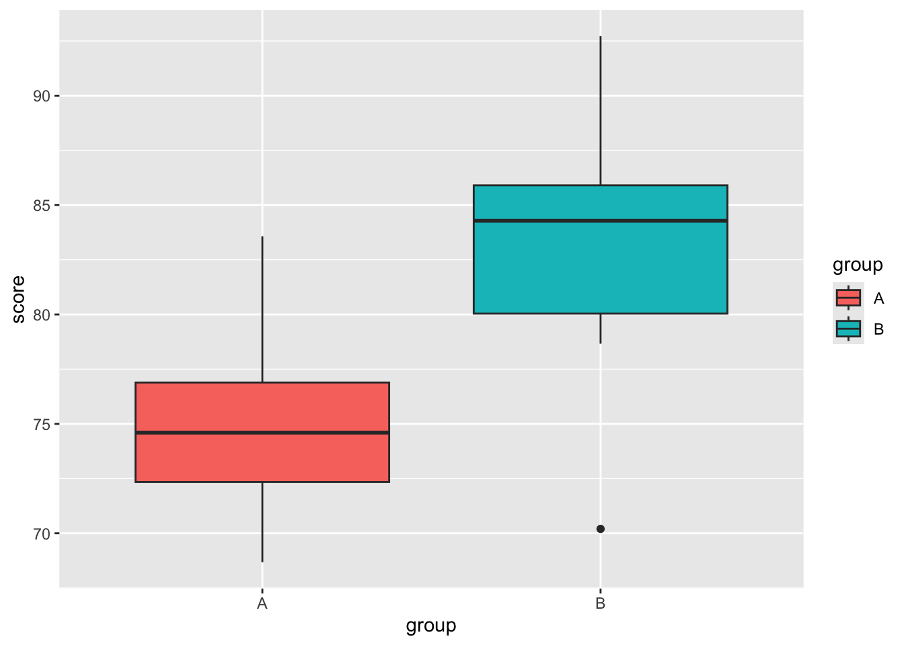

Adding structure
A well-structured Quarto document helps readers follow your analysis and lets Quarto automatically generate a table of contents, numbered sections, and cross-references. You add structure with headings, numbered elements (figures, tables, equations), and citations.
External Resources
For more detail, see for example HTML basics
Headings and Section Numbering
Do: Run the following in your own quarto document.
# Main Title
## Section Title
### Subsection TitleSee: Quarto interprets these heading levels to build a document hierarchy, reflected in the output and, if enabled, in a table of contents (toc: true in the YAML header).
Predict: if you also add number-sections: true to the YAML header, predict how the three headings above would be numbered.
---
title: "My Analysis Report"
toc: true
number-sections: true
---Explain: as predicted, headings are numbered according to their hierarchy: 1 for the top-level heading, 1.1 for the section beneath it, and 1.1.1 for the subsection beneath that. This numbering updates automatically as you add, remove, or reorder headings, and each numbered heading can then be cross-referenced elsewhere in the text.
Numbering Figures and Equations
Quarto also numbers figures, tables, and equations that have a label. To number a figure, add a label starting with fig- and a caption via fig-cap:
#| label: fig-distribution
#| fig-cap: "Distribution of scores by group."
ggplot(data, aes(x = group, y = score, fill = group)) +
geom_boxplot()To reference it in text, use the label: See @fig-distribution for an overview. renders as: See Figure 1 for an overview.
Equations are numbered the same way, by adding a label after the closing $$:
$$
E = mc^2
$$ {#eq-myequation}\[ E = mc^2 \tag{1}\]
Referencing it with @eq-myequation then renders as: Equation 1.
Common Mistake
A cross-reference only works if its target actually has a matching label. If you reference @fig-distribution but the figure’s label is misspelled, missing, or doesn’t start with the required prefix (fig-, tbl-, eq-), Quarto won’t resolve the link. Instead of a number like “Figure 1,” the rendered document will show the broken reference text as-is, or a ?@... placeholder. If a cross-reference isn’t rendering as a number, check the label first.
Adding References and Citations
Quarto uses Pandoc’s citation system to cite sources from a bibliography file. In your YAML header, include the path to a .bib file:
---
title: "My Report"
bibliography: references.bib
---You can then cite works in-text using the @ symbol and the citation key from your .bib file:
@smith2021→ Smith (2021)[@smith2021; @doe2022]→ (Smith 2021; Doe 2022)
To include a bibliography at the end of your document, add a # References heading — Quarto populates it automatically during rendering.
External Resources
For more detail, see Quarto citations
Practice Exercise
You created a figure with #| label: fig-boxplot. What syntax would you use to reference it in your text?
@fig-boxplot. For example: See @fig-boxplot for the distribution of scores.
References
Doe, Jane. 2022. Reproducible Analysis with Quarto. 1st ed. New York: Open Science Press.
Smith, John. 2021. “Data Visualization Techniques for Modern Research.” Journal of Data Science Education 15 (2): 101–20. https://doi.org/10.1234/jdse.2021.15.2.101.